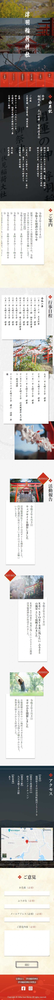

福岡県うきは市にある「浮羽稲荷神社」。こちらの神社のホームページ製作に携わりました。
今回担当させて頂いたのはTOPページ＋下層ページのデザインのみとなっています。
福岡では有名なインスタ映えスポットで、ターゲットは通常の参拝客の他、インスタ映えを狙った女性客にも印象の良いデザインをご希望とのことで、 派手過ぎず明るいイメージのデザインを意識しました。
和風のフォントの他、ポイントの朱色、神聖さや厳かな雰囲気を感じさせるファーストビューなど、神社のイメージを最大限引き出せるようなデザインにこだわりました。
